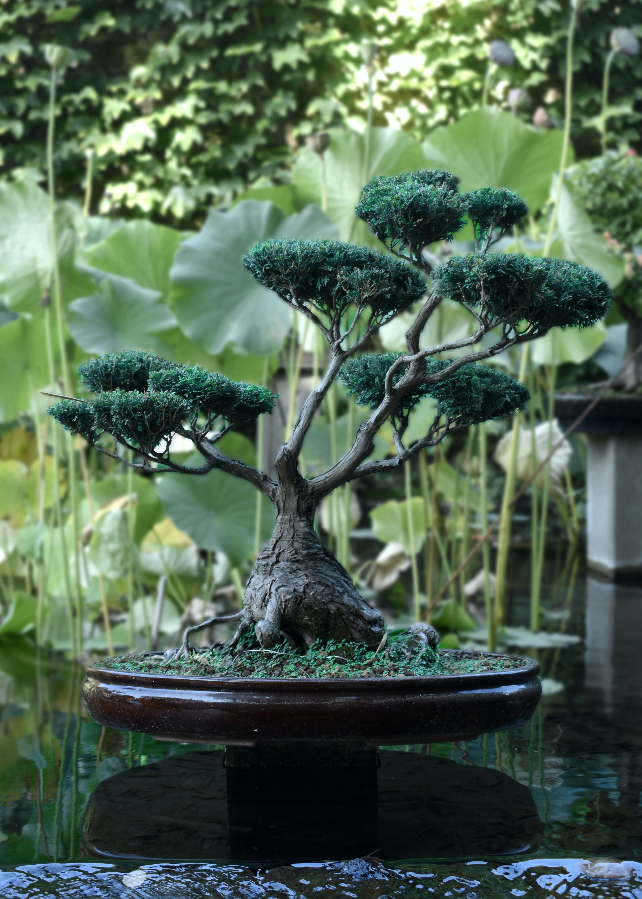

Tips para tener en cuenta en su cuidado!

El riego del bonsái
El riego es fundamental: con él se disuelven los elementos que hay en el sustrato y de este modo, la planta los puede absorber. Lo principal es estar atentos al follaje del árbol y a la humedad de la tierra. Riega tu bonsái con agua de lluvia cuando la tierra se encuentre ligeramente seca, si aún está algo húmeda espera un tiempo.
Abonando los bonsáis
El bonsái, como todas las plantas de maceta, tiene un espacio limitado donde desarrollarse, por lo que los nutrientes de los que dispone son muy limitados y la salud de nuestra planta queda comprometida.
Cómo podar un bonsái
La poda es la acción que hará que tu árbol consiga la forma adecuada al estilo de bonsái que tengas en mente. En general debe hacerse en el momento de inactividad del árbol, desde la caída de la hoja hasta antes de la brotación, pero lo más recomendable es llevarlo a cabo en los últimos momentos del invierno.